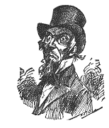

THE SOCIAL SCIENCE MEETING.
One day Josiah and me went into a meetin' where they wuz kinder fixin' over the world, sort a repairin' of it, as you may say. Some of the deepest, smartest speeches I ever hearn in my life, I hearn there.
You know it is a middlin' deep subject. But they rose to it. They rose nobly to it. Some wuz for repairin' it one way, and some another -- some wanted to kinder tinker it up, and make it over like. Some wanted to tear it to pieces, and build it over new. But they all meant well by the world, and nobody could help respectin' 'em.
I enjoyed them hours there with 'em, jest about as well as it is in my power to enjoy anything. They wuz all on 'em civilized Christian folks and philanthropists of different shades and degrees, all but one. There wuz one heathen there. A Hindoo right from Hindoostan, and I felt kinder sorry for him. A heathen sot right in the midst of them folks of refinement, and culture, who had spent their hull lives a tryin' to fix over the world, and make it good.
This poor little heathen, with a white piller case, or sunthin' wound round his head (I s'pose he hadn't money to buy a hat), and his small black eyes lookin' out kinder side ways from his dark hombly little face, rousted up my pity, and my sympathy. There had been quite a firm speech made against allowin' foreigners on our shores. And this little heathen, in his broken speech, said, It all seemed so funny to him, when everybody wuz foreigners in this country, to think that them that got here first should say they owned it, and send everybody else back. And he said, It seemed funny to him, that the missionarys we sent over to his land to teach them the truth, told them all about this land of Liberty, where everybody wuz free, and everybody could earn a home for themselves, and urged 'em all to come over here, and then when they broke away from all that held 'em in their own land, and came thousands and thousands of milds, to get to this land of freedom and religion,then they wuz sent back agin, and wuzn't allowed to land. It seemed so funny.
And so it did to me. And I said to myself, I wonder if they don't lose all faith in the missionarys, and what they tell them. I wonder if they don't have doubts about the other free country they tell 'em about. The other home they have urged 'em to prepare for, and go to. I wonder if they haint afraid, that when they have left their own country and sailed away for that home of Everlastin' freedom, they will be sent back agin, and not allowed to land.
But it comferted me quite a good deal to meditate on't, that that land didn't have no laws aginst foreign emigration. That its ruler wuz one who held the rights of the lowest, and poorest, and most ignerent of His children, of jest as much account as he did the rights of a king. Thinkses I that poor little head with the piller case on it will be jest as much looked up to, as if it wuz white and had a crown on it. And I felt real glad to think it wuz so.
But I went to every meetin' of 'em, and enjoyed every one of 'em with a deep enjoyment. And I said then, and I say now, for folks that had took such a hefty job as they had, they done well, nobody could do better, and if the world wuzn't improved by their talk it wuz the fault of the world, and not their'n.
And we went to meetin' on Sunday mornin' and night, and hearn good sermons. There's several high big churches at Saratoga, of every denomination, and likely folks belong to the hull on 'em: There is no danger of folks losin' their way to Heaven unless they want to, and they can go on their own favorite paths too, be they blue Presbyterian paths, or Methodist pasters, or by the Baptist boat, or the Episcopalian high way, or the Catholic covered way, or the Unitarian Broadway, or the Shadow road of Spiritualism.
No danger of their losin' their way unless they want to. And I thought to myself as I looked pensively at the different steeples, "What though there might be a good deal of'wranglin', and screechin', and puffin' off steam, at the different stations, as there must always be where so many different routes are a layin' side by side, each with its own different runners, and conductors, and porters, and managers, and blowers, still it must be, that the separate high ways would all end at last in a serener road, where the true wayfarers and the earnest pilgrims would all walk side by side, and forget the very name of the station they sot out from.
I sez as much to my companion, as we wended our way home from one of the meetin's, and he sez, "There haint but one right way, and it is a pity folks can't see it." Sez he a sithin' deep, "Why can't everybody be Methodists?"
We wuz a goin' by the 'Piscopal church then, and he sez a lookin' at it, as if he wuz sorry for it, "What a pity that such likely folks as they be, should believe in such eronious doctrines. Why," sez he, "I have hearn that they believe that the bread at communion is changed into sunthin' else. What a pity that they should believe anything so strange as that is, when there is a good, plain, practical, Christian belief that they might believe in, when they might be Methodists. And the Baptists now," sez he, a glancin' back at their steeple, "why can't they believe that a drop is as good as a fountain? Why do they want to believe in so much water? There haint no need on't. They might be Methodists jest as well as not, and be somebody."
And he walked along pensively and in deep thought, and I a feelin' somewhat tuckered didn't argue with him, and silence rained about us till we got in front of the hall where the Spiritualists hold their meetin's, and we met a few a comin' out on it and then he broke out and acted mad, awful mad and skernful, and sez he angrily, "Them dumb fools believe in supernatural things. They don't have a shadow of reason or common sense to stand on. A man is a fool to gin the least attention to them, or their doin's. Why can't they believe sunthin' sensible? Why can't they jine a church that don't have anything curius in it? Nothin' but plain, common sense facts in it: Why can't they be Methodists?"
"The idee!" sez he, a breakin' out fresh. "The idee of believin' that folks that have gone to the other world can come back agin and appear. Shaw!" sez he, dretful loud and bold. I don't believe I ever heard a louder shaw in my life than that wuz, or more kinder haughty and highheaded.
And then I spoke up, and sez, "Josiah, it is always well, to shaw in the right place, and I am afraid you haint studied on it as much as you ort. I am afraid you haint a shawin' where you ort to."
"Where should I shaw?" sez he, kinder snappish.
"Wall," sez I, "when you condemn other folkses beliefs, you ort to be careful that you haint a condemin' your own belief at the same time. Now my belief is grounded in the Methodist meetin' house like a rock; my faith has cast its ancher there inside of her beliefs and can't be washed round by any waves of opposin' doctrines. But I am one who can't now, nor never could, abide bigotry and intolerance either in a Pope, or a Josiah Allen.
"And when you condemn a belief simply on the ground of its bein' miraculous
and beyond your comprehension, Josiah Allen, you had better pause and consider
on what the Methodist faith is founded.
"All our orthodox meetin' houses, Presbyterian, Baptist, Methodist,
Episcopalian, every one on 'em, Josiah Allen, are sot down on a belief,
a deathless faith in a miraculous birth, a life of supernatural events,
the resurrection of the dead, His appearance after death, a belief in the
graves openin' and the dead comin' forth, a belief in three persons inhabitin'
one soul, the constant presence and control of spiritual influences, the
Holy Ghost, and the spirits of just men. And while you are a leanin'
up against that belief, Josiah Allen, and a leanin' heavy, don't shaw at
any other belief for the qualities you hold sacred in your own."
He quailed a very little, and I went on.
"If you want to shaw at it, shaw for sunthin' else in it, or else let it entirely alone. If you think it lacks active Christian force, if you think it is not aggressive in its assaults at Sin, if you think it lacks faith in the Divine Head of the church, say so, do; but for mercy's sake try to shaw in the right place."
"Wall," sez he, "they are a low set that follers it up mostly, and you know it." And his head was right up in the air, and he looked very skernful.
But I sez, "Josiah Allen, you are a shawin' agin in the wrong place," sez I. "If what you say is true, remember that 1800 years ago, the same cry wuz riz up by Pharisees, `He eats with Publicans and sinners.' They would not have a king who came in the guise of the poor, they scerned a spiritual truth that did not sparkle with worldly lustre.
"But it shone on; it lights the souls of humanity to-day. Let us not be afraid, Josiah Allen. Truth is a jewel that cannot be harmed by deepest investigation, by roughest handlin'. It can't be buried, it will shine out of the deepest darkness. What is false will be washed away, what is true will remain. For all this frettin', and chafing, all this turbelence of conflectin' beliefs, opposin' wills, will only polish this jewel. Truth, calm and serene, will endure, will shine, will light up the world."
He begun to look considerable softer in mean, and I continued on: "Josiah Allen, you and I know what we believe the beautiful religion (Methodist Episcopal) that we both love, makes a light in our two souls. But don't let us stand in that light and yell out, that everybody else's light is darkness; that our light is the only one. No, the heavens are over all the earth; the twelve gates of heaven are open and a shinin' down on all sides of us.
"Jonesville meetin' house (Methodist Episcopal) haint the only medium through which the light streams. It is dear to us, Josiah Allen, but let us not think that we must coller everybody and drag 'em into it. And let us not cry out too much at other folkses superstitions, when the rock of our own faith, that comforts us in joy and sorrow, is sot in a sea of supernaturalism.
"You know how that faith comforts our two souls, how it is to us, like the shadow of a great rock in a weary land, but they say, their belief is the same to them, let us not judge them too hardly. No, the twelve gates of heaven are open, Josiah Allen, and a shinin' down onto the earth. We know the light that has streamed into our own souls, but we do not know exactly what rays of radience may have been reflected down into some other lives through some one of those many gates.
"The plate below has to be prepared, before it can ketch the picture and hold it. The light does not strike back the same reflection from every earthly thing. The serene lake mirrors back the light, in a calm flood of glory, the flashin' waterfall breaks it into a thousand dazzlin' sparkles. The dewy petal of the yellow field lily, reflects its own ray of golden light back, so does the dark cone of the pine tree, and the diamond, the opal, the ruby, each tinges the light with its own coloring, but the light is all from above. And they all reflect the light, in their own way for which the Divine skill has prepared them.
"Let us not try to compel the deep blue Ocean waves and the shinin' waterfall, and the lily blow, to reflect back the light, in the same identical manner. No, let the light stream down into high places, and low ones, let the truth shine into dark hearts, and into pure souls. God is light. God is Love. It is His light that shines down out of the twelve gates, and though the ruby, or the amethyst, may color it by their own medium, the light that is reflected, back is the light of Heaven. And Josiah Allen," sez I in a deeper, earnester tone, "let us who know so little ourselves, be patient with other ignerent ones. Let us not be too intolerent, for no intolerence, Josiah Allen is so cruel as that of ignerence, an' stupidity."
Sez Josiah, "I won't believe in anything I can't see, Samantha Allen."
I jest looked round at him witheringly, and sez I, "What have you ever seen, Josiah Allen, I mean that is worth sein'? Haint everything that is worth havin' in life, amongst the unseen? The deathless loves, the aspirations, the deep hopes, and faiths, that live in us and through us, and animate us and keep us alive, -- Whose spectacles has ever seen 'em? What are we, all of us human creeters, any way, but little atoms dropped here, Heaven knows why, or how, into the midst of a perfect sea of mystery, and unseen influences. What hand shoved us forwards out of the shadows, and what hand will reach out to us from the shadows and draw us back agin? Have you seen it Josiah Allen? You have felt this great onseen force a movin' you along, but you haint sot your eyes on it.
"What is there above us, below us, about us, but a waste of mystery, a power of onseen influences?.
"You won't believe anything you can't see: -- Did you ever see old Gravity, Josiah Allen, or get acquainted with him? Yet his hands hold the worlds together. Who ever see the mysterious sunthin' in the North that draws the ship's compass round? Who ever see that great mysterious hand that is dropped down in the water, sweepin' it back and forth, makin' the tides come in, and the tides go out? Who ever has ketched a glimpse of them majestic fingers, Josiah Allen? Or the lips touched with lightnin', whose whispers reach round the world, and through the Ocean? You haint see 'em, nor I haint, No, Josiah Allen, we don't know much of anything, and we don't know that for certain. We are all on us only poor pupils down in the Earth's school-room, learnin' with difficulty and heart ache the lessons God sets for us.
Tough old Experience gives us many a hard floggin', before we learn the day's lessons. And we find the benches hard, long before sundown. And it makes our hearts ache to see the mates we love droop their too tired heads in sleep, all round us before school is out. But we grind on at our lessons, as best we may. Learnin' a little maybe. Havin' to onlearn a sight, as the pinters move on towards four. Clasping hands with fellow toilers and (hard task) onclaspin' 'em, as they go up above us, or down nearer the foot. Havin' little `intermissions' of enjoyment, soon over. But we plod on, on, and bimeby -- and sometimes we think we do not care how soon -- the teacher will say to us, that we can be 'dismissed.' And then we shall drop out of the rank of learners, and the school will go without us, jest as busily, jest as cheerfully, jest as laboriously, jest as sadly. Poor learners at the hard lessons of life. Learnin' out of a book that is held out to us from the shadows by an onseen, inexorable hand. Settin' on hard benches that may fall out from under us at any time. Poor ignerent creeters that we are, would it not be a too arrant folly for us to judge each other hardly, we, all on us, so deplorably ignerent, so weakly helpless?"
Sez Josiah, in earnest axcents, "Le's walk a little faster."
And, in lookin' up, I see that he wuz readin' a advertisement. I ketched sight of a picture ornamentin' of it. It wuz Lydia Pinkham. And as I see that benine face, I found and recovered myself. Truly, I had been a soarin' up, up, fur above Saratoga, Patent Medicines, Josiah Allen, etc., etc.
But when I found myself by the side of Josiah Allen once more, I moved onwards in silence, and soon we found ourselves right by the haven where I desired to be, -- our own tried and true boardin' house.
Truly eloquence is tuckerin', very, especially when you are a soarin' and a walkin' at the same time.
